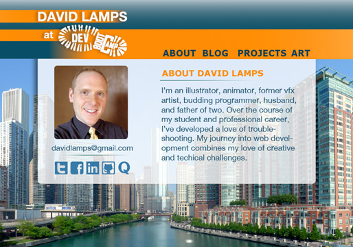
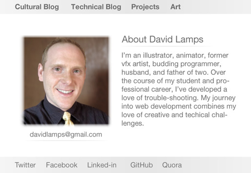
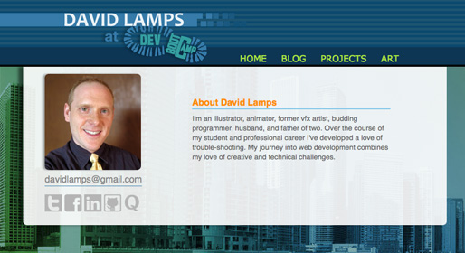

Professional Grade Blog
This week I focused most of my time tweaking the look of this blog. I went through a few designs concepts, and ultimately decided on this one:
Here's how it used to look when I first deployed it:
And here's how it looks as of this post, and after getting feedback from others:
Leading up to this week, there were several times I really got into designing the look of my page. Other days I dreaded it, and dreaded the day I would have to do an overhaul on all of my pages. Earlier this week, I spent a whole day rebuilding my blog template html and css files from scratch. After I was done for the day I told my wife "I hate designing web pages." I have a hard time relating to that comment at the time of this post, however. The part that had me stressed out was whether or not I was constructing my site the correct way due to my beginners knowledge of html and css. I'm still not sure about the architecture, but I realize now I learned a ton while reworking the html and css.
What helped me the most in getting over my earlier frustration was having my wife take a look at the site and give me her feedback. What has helped additionally is getting feedback and tips from other web designers who have had more practice at this than myself, including a DBC alumn and a former co-worker of mine. I received technical feedback about fixing a float, adjusting the way I use css to layout the background image, and some visual hierachy advice. I've taken a look at most of this advice and have incorporated most of it as well. I feel that this blog looks way better because of the input of these kind souls; better than it would look had I not reached out. My wife deserves most of the thanks. She actually did the graphic design for the final look. I wish I could take her with me to DBC to help on the layouts I'll be dealing with there!
There are still some improvements I'd like to make to this site. Previous and Next buttons to go through blog posts, and I want to figure out a better way to update the blog posts on my side bar. Right now I have to copy and paste the list into every html file I've created so far.